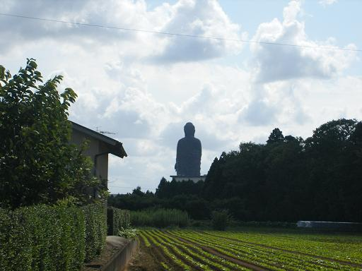
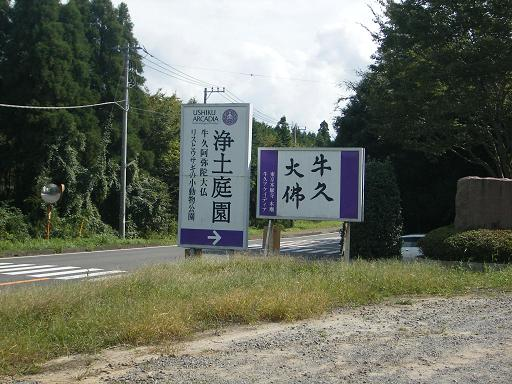
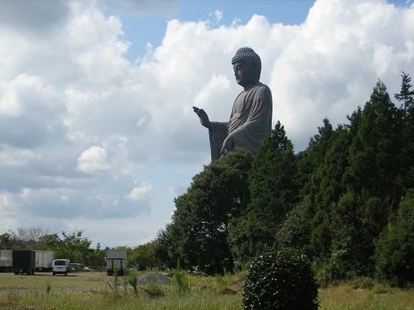
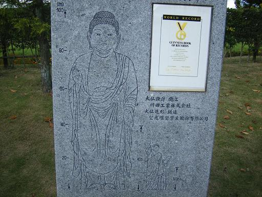
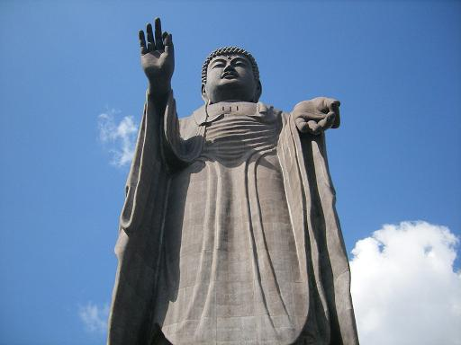
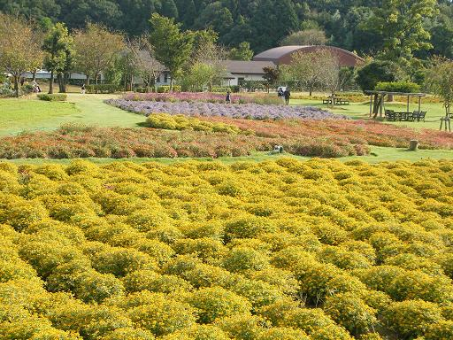

牛久大仏
| 日付 | 2006年9月23日（土） |
|---|---|
| メンバー | 単独 |
| アクセス | 電車 |
牛久大仏の存在をネットで知り、見に行くことにする。
ひたちのうしく駅から歩くこと1時間。牛久大仏の姿が見えて来た。

牛久大仏入口。

でかい…

自由の女神像との比較図。女神像は大仏のひざの高さ。
右上は、世界一高い大仏であることを認める、ギネスブック認定証。

身長120mの高層建築。
これを作ろうと言い出した人と、金を出した人の顔が見てみたい…

下から見上げる。大仏の中には入れるようになっている（内部は撮影禁止）。

大仏の周りは庭園になっている。
